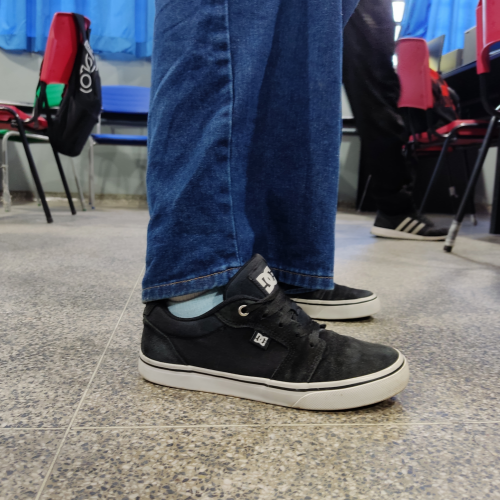

Tênis DC Anvil LA
Marca: DC Shoes Modelo: Anvil LA Cor: Black White / Branco e Preto Tênis DC shoes desenvolvido pelo atleta Wes Kremer, produzido com Tecnologia SUPER SUEDE, Tecnologia de Camurça reforçada para andar de skate que dura 50% a mais que um tênis convencional.Solado "Cup Sole" tecnologia que produz uma sola mais resistente exclusiva DC Shoes, lingua em espuma almofadada de tecido leve para circulação de ar.